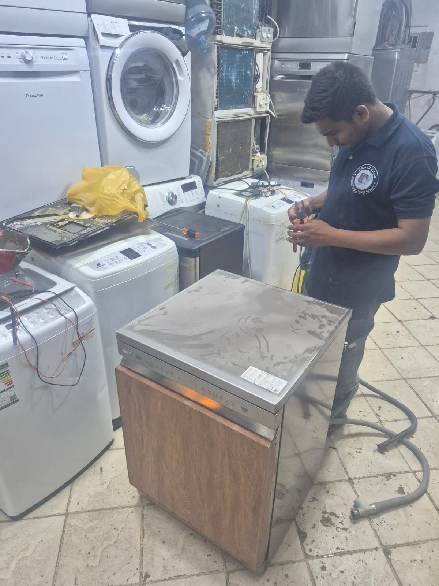

Simple Dishwasher Maintenance That Prevents Repairs صيانة بسيطة لغسالة الصحون تمنع الأعطال

Most dishwasher call-outs for "poor cleaning" trace back to the same two culprits — a clogged filter and a blocked spray arm. Both take a few minutes to check and can save you an unnecessary repair visit.
Clean the filter monthly
The filter at the base of the tub catches food scraps so they don't recirculate onto your dishes. If it's not removed and rinsed regularly, water stops draining efficiently and dishes come out with residue. Most filters twist out by hand — check your model's manual for the exact release mechanism.
Check the spray arm holes
The spinning arms have small holes that direct water onto your dishes. Mineral deposits and food particles block these over time, leaving some dishes untouched by the wash cycle. A toothpick clears blocked holes in a couple of minutes.
Run a hot empty cycle with a cleaner occasionally
A monthly empty cycle with a dishwasher-safe cleaner helps dissolve grease and mineral buildup inside the pump and hoses — the parts you can't see or reach directly.
Don't ignore a persistent bad smell
An ongoing odor usually means trapped food debris or standing water in the drain line, not something a rinse aid will fix. If cleaning the filter doesn't help, it's worth having a technician check the drain pump and hose.
When it's more than maintenance
If cleaning and checking these parts doesn't resolve poor cleaning, leaks, or drainage issues, the fault is likely with a pump, valve, or the control board — worth a proper on-site diagnosis rather than repeated guesswork.
معظم زيارات إصلاح غسالة الصحون بسبب "ضعف التنظيف" تعود إلى سببين شائعين — انسداد الفلتر أو ذراع الرش. كلاهما يستغرق فحصهما بضع دقائق فقط، وقد يوفر عليك زيارة إصلاح غير ضرورية.
نظّف الفلتر شهريًا
يلتقط الفلتر الموجود في قاع الحوض بقايا الطعام حتى لا تعود لتتراكم على الأطباق. إذا لم يُزل ويُغسل بانتظام، يتوقف الماء عن التصريف بكفاءة وتخرج الأطباق وعليها بقايا. معظم الفلاتر تُخلع بلف اليد — راجع دليل جهازك لمعرفة طريقة الفك الصحيحة.
افحص فتحات ذراع الرش
تحتوي الأذرع الدوارة على فتحات صغيرة توجّه الماء نحو الأطباق. تتراكم فيها الرواسب المعدنية وبقايا الطعام مع الوقت، ما يترك بعض الأطباق دون غسيل كافٍ. تنظيف الفتحات المسدودة يستغرق دقائق قليلة باستخدام عود أسنان.
شغّل دورة ساخنة فارغة مع منظف من حين لآخر
تشغيل دورة فارغة شهريًا مع منظف مخصص لغسالات الصحون يساعد على إذابة الشحوم والرواسب المعدنية داخل المضخة والخراطيم — الأجزاء التي لا يمكنك الوصول إليها مباشرة.
لا تتجاهل الرائحة الكريهة المستمرة
الرائحة المستمرة عادة ما تعني وجود بقايا طعام محاصرة أو مياه راكدة في خط التصريف، وليس شيئًا يحله ملمّع الشطف. إذا لم يساعد تنظيف الفلتر، يستحق الأمر أن يفحص فني مضخة وخرطوم التصريف.
متى يتجاوز الأمر الصيانة
إذا لم يحل تنظيف وفحص هذه الأجزاء مشاكل التنظيف أو التسريب أو التصريف، فالعطل على الأرجح في المضخة أو الصمام أو لوحة التحكم — ويستحق تشخيصًا صحيحًا في الموقع بدلاً من التخمين المتكرر.